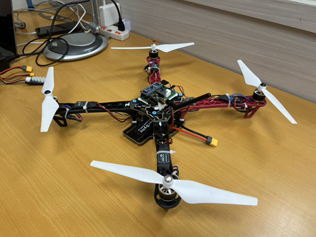
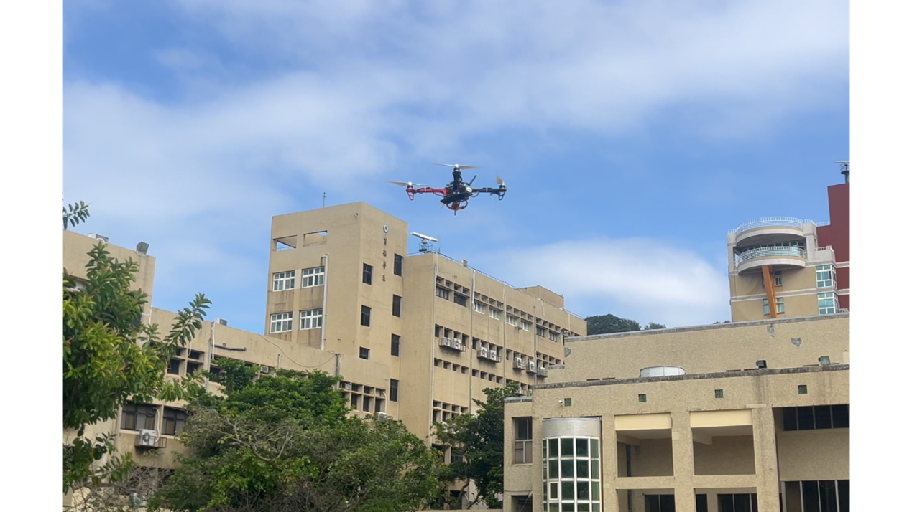

以 STM32F103 與 FreeRTOS 自製四旋翼飛控
從 MPU6050 感測、Fusion 姿態估測、Roll/Pitch 串級 PID，到 X 型混控與 TIM4 PWM 輸出，全部在一顆 72 MHz 的 STM32F103 上完成； 搭配自製 STM32F411 遙控器、nRF24L01P 雙向無線鏈路與 Python 即時調參工具，已在 F450 機架上實際飛行。

30 秒重點
- 完整控制鏈自行實作：感測 → 濾波 → AHRS → 串級 PID → 混控 → PWM，每 6 ms 在同一個 FreeRTOS 任務內依序執行。
- 雙向無線：遙控指令走上行封包，遙測與調參結果藉 nRF24L01P 的 ACK Payload 回傳，不需切換收發模式。
- 可量測、可調整：31 B 遙測封包把 PID 各項與四路 PWM 送回電腦，可在飛行中線上改寫 Kp/Ki/Kd。
- 實機驗證：F450 實飛影片、測試架調參截圖與 6 份遙測 CSV（約 5.1 萬筆樣本）皆收錄於本站。
成果一覽
實測 5 份 CSV 的 time_ms 間隔平均皆為 6.0 ms

▶ YouTube 實飛影片合輯
動機與目標
專案起點
專案最初跟隨 Bilibili 教學影片（BV1f8rbBSEq3） 入門，之後逐步改寫為目前的架構：改用 Fusion AHRS、加入串級 PID、ACK 遙測、線上調參與主機端測試，最後完成 F450 實飛。
待作者補充
- 選擇自製飛控（而非使用現成飛控）的個人動機與想驗證的問題。
- 與教學原始版本相比，哪些部分是自行設計或改寫（建議附 commit 對照）。
專案目標（依已完成的實作整理）
- 不依賴現成飛控韌體，自行完成「感測 → 姿態 → 控制 → 輸出」完整鏈路。
- 以 FreeRTOS 分離飛控、通訊與指示燈任務，維持固定 6 ms 控制週期。
- 建立可觀測、可調整的工具鏈：遙測回傳、CSV 記錄、線上改寫 PID。
- 加入失聯保護與解鎖條件，在測試架與實機上驗證。
技術特色
串級 PID 與量測微分
Roll/Pitch 角度外環輸出角速度目標，內環以陀螺儀回授；內環 D 項取量測值微分並經 10 Hz 低通，避免設定值跳變造成微分尖峰。
ACK Payload 雙向通訊
飛控端維持 PRX 接收模式，把遙測或調參結果預先排入 ACK；遙控器每送一包控制封包就順帶取回一份資料。
可靠的線上調參協定
24 B 指令含版本、序號與 CRC16；同序號去重，結果在奇數序號 ACK 中最多重排 8 次，抵抗 ACK 遺失。
失聯與解鎖保護
1000 ms 未收到有效控制封包即進入 FAIL 並停機；解鎖需油門最低、三軸置中並收到 power 事件。
主機端測試
PID、無線驅動、調參協定與遙測編碼皆有 C 主機端測試；Python 工具也有單元測試。
可視化調參工具
pid_tune.py 同時顯示姿態角、目標/實際角速度、誤差、P/D/輸出與四路 PWM，並記錄 CSV。
章節導覽
01 硬體
STM32F103C8T6、MPU6050、ESC、馬達、F411 遙控器與腳位。
閱讀 →02 軟體
FreeRTOS 三任務、排程、共享資料與 6 ms 控制週期。
閱讀 →03 AHRS
濾波、Fusion、四元數與歐拉角；可拖曳的 3D 姿態模型。
閱讀 →04 控制
互動式串級 PID 方塊圖、混控計算器與示意模擬。
閱讀 →05 通訊
封包格式、ACK Payload 時序、序號與失聯保護。
閱讀 →06 實驗
真實遙測 CSV 檢視器、4 Hz 振盪分析與調參紀錄。
閱讀 →07 研究延伸
控制器、濾波、系統識別與後續研究規劃。
閱讀 →互動架構圖
四張可點選節點、附程式碼行號的架構圖。
開啟 →目前限制（誠實揭露）
- 定高未實作：
FIX_HEIGHT狀態只會停止馬達 。 - 未使用磁力計，Yaw 只有角速度控制，沒有絕對航向保持。
- PID 沒有輸出限幅與積分抗飽和；任務實際執行時間尚未量測。
- 收錄的遙測 CSV 來自調參早期（增益與目前原始碼不同），詳見 實驗。